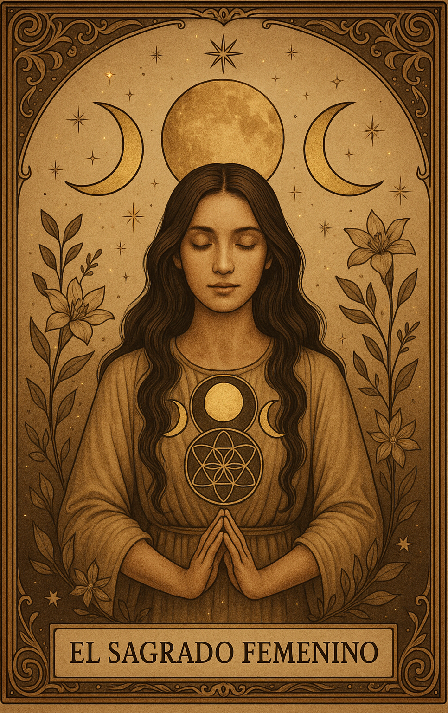
I
El Sagrado Femenino
"Mi cuerpo es templo. Mi intuición es guía. Mi alma es medicina."
✦ Ebook Mágico · Magia Ancestral · 13 Lunas ✦
Ebook Mágico de las 13 Lunas
✨ No todos los libros se leen… algunos se viven.
✨ Quiero mi Grimorio LunarPortal del Conocimiento Ancestral
Grimorio Lunar – Ebook mágico de las 13 lunas
No todos los libros se leen… algunos se viven.
El Grimorio Lunar es más que un manuscrito: es un portal sagrado con más de 500 páginas donde la magia, la sabiduría ancestral y la conexión espiritual se entrelazan para guiarte en tu camino de despertar.
si sientes el llamado entonces este grimorio no llegó a ti por casualidad.
La Luna te ha llamado, y ahora este libro se convierte en el puente que une tus sueños, tus ciclos y tu poder interior con la fuerza del universo.
Imagina tener en tus manos una obra que no solo explica con claridad paso a paso, sino que activa tu energía, expande tu conciencia y despierta tu intuición. Cada página está escrita para ayudarte a abrir memorias dormidas en tu alma, recordándote quién eres y lo que siempre estuvo dentro de ti: Tu Magia pura, auténtica y transformadora y tu poder creador.
El Contenido del Grimorio
Cada fase lunar guarda un mensaje y una vibración única. Aprenderás a reconocer cómo la luna nueva abre portales de siembra, cómo la luna llena expande tu poder y cómo cada transición lunar influye en tu destino, tus emociones y hasta en los ciclos más íntimos de tu vida. Serás capaz de sincronizar tus pasos con el pulso del universo.
Las velas son más que fuego: son oráculos de luz que hablan en su flama, en su humo y en sus formas. Descubrirás cómo leerlas y utilizarlas para abrir caminos, disolver bloqueos, limpiar energías pesadas y atraer prosperidad. Cada color, cada forma y cada chispa encierra un secreto ancestral que ahora estará en tus manos.
No son simples minerales, son guardianes de la Tierra con memorias milenarias. Este grimorio te revelará cuáles piedras utilizar para atraer amor verdadero, cuáles para proteger tu energía, cuáles expanden tu abundancia y cuáles te devuelven la claridad mental. Aprenderás a programarlas y a trabajar con ellas como aliadas mágicas en tu día a día.
Desde tiempos ancestrales, las hierbas han sido medicina, magia y puente entre mundos. Conocerás secretos de plantas sagradas para limpiar espacios, sanar heridas emocionales, elevar tu vibración y reconectar con la fuerza primitiva de la Madre Tierra. Cada hoja y cada raíz se convierte en un canal de sabiduría viva.
La magia no tiene por qué ser complicada. Aquí encontrarás conjuros claros y detallados, paso a paso, para atraer lo que deseas y transformar lo que ya no sirve en tu vida. Amor, protección, abundancia, claridad: cada hechizo está diseñado con intención y cuidado, listo para que lo actives con tu propia energía.
Un viaje profundo hacia la raíz de tu poder creador. Este ritual te conecta con tu útero como templo, te ayuda a sanar memorias guardadas en tu linaje y a reconciliarte con la energía femenina que habita en ti. Es una práctica de liberación, reconexión y despertar que honra tu esencia y tu herencia sagrada.
La Luna refleja en ti a la Doncella, la Madre, la Hechicera y la Anciana. Este grimorio te mostrará cómo vivir en sincronía con cada una de estas energías, reconociendo sus dones, sus fuerzas y sus aprendizajes. Descubrirás cómo tu ciclo interno está unido al ciclo lunar y cómo esa conexión potencia tu poder personal.
La palabra es magia. Los decretos son llaves que abren realidades. Aquí encontrarás fórmulas, frases y protocolos rituales diseñados para limpiar tus bloqueos internos y activar la prosperidad en todas sus formas: económica, emocional, espiritual. Aprenderás a invocar la abundancia desde la certeza y no desde la carencia.
Tu energía, tu hogar y tu espíritu necesitan cuidado. En este apartado descubrirás rituales ancestrales para limpiar cargas negativas, cortar lazos dañinos y protegerte a ti y a tu espacio con fuerza y claridad. Son prácticas que actúan como un escudo invisible, devolviéndote paz y seguridad.
Manifestar no es desear: es alinear tu intención con el universo. Este grimorio te revela, paso a paso, cómo convertir tus pensamientos en realidades, cómo enfocar tu energía y cómo vibrar en sintonía con lo que quieres atraer. Es la llave para transformar tu vida y abrirte a nuevas posibilidades.
Cada apartado de este Grimorio Lunar está diseñado para ser un espejo de tu poder y un recordatorio de la magia que ya habita en ti. No solo aprenderás teorías: vivirás un viaje iniciático hacia tu transformación.
Lo que lo hace diferente
Porque no es un Ebook más. Es un legado espiritual cuidadosamente tejido con prácticas ancestrales, rituales claros y enseñanzas profundas que se adaptan a tu vida actual.
Aquí no hay complicaciones, sino caminos abiertos para que integres la magia blanca en tu día a día con facilidad y amor. El Grimorio Lunar es un altar en forma de libro.
Cada vez que lo abras, la Luna hablará contigo.
Cada vez que lo leas, sentirás que algo dentro de ti despierta.
No importa si eres principiante, terapeuta holística o si llevas años en la senda espiritual: este grimorio se convertirá en tu compañero, en tu guía para amplificar tu mapa de poder.
Oferta de Lanzamiento
Con 527 páginas repletas de conocimiento, prácticas, rituales y secretos ancestrales, el Grimorio Lunar tiene un valor que supera los 49 USD.
Valor real: $49 USD
$14,99
✦ Precio especial de lanzamiento ✦
Un precio simbólico para el tesoro espiritual que recibirás.
Un regalo para quienes escuchan el llamado de la Luna y deciden actuar hoy.
Acceso inmediato · PDF descargable · Pago seguro
Tu momento ha llegado
Si has llegado hasta aquí, no es casualidad.
El Grimorio Lunar te eligió.
No postergues lo que tu corazón ya decidió.
Cada página te espera para despertar tu poder, honrar tu esencia y guiarte hacia la vida que mereces.
La magia no se piensa, se siente.
La Luna ya te llamó.
El momento es ahora.
Grimorio listo para imprimir
Haz tuyo el Grimorio Lunar, despierta tus dones y permite que las trece Lunas guíen tu camino, y te recuerden tu verdadero propósito.
No es un libro. Es un portal.
con más de 500 páginas de conocimiento ancestral
Un viaje sagrado a través de los ciclos de la luna para despertar la sabiduría que duerme en tu interior. Aquí encontrarás conciencia, ritual, autoconocimiento y conexión profunda con la magia ancestral.
Cada página es un espejo.
Cada luna, una iniciación.
Cada palabra, una llave hacia tu poder, intuitivo y creador.
Si sientes que algo en ti está despertando…
Este Grimorio no llega por casualidad.
Arcanos del Grimorio
Ocho portales hacia el conocimiento ancestral.
Cada carta, un espejo. Cada símbolo, una llave.

"Mi cuerpo es templo. Mi intuición es guía. Mi alma es medicina."
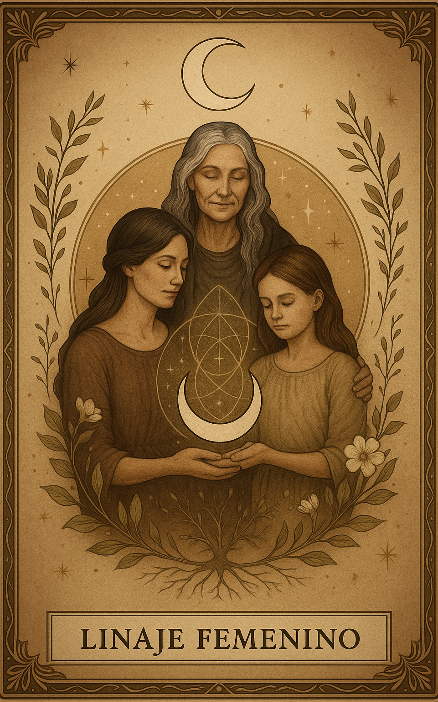
"Cuando una mujer recuerda quién es, el linaje entero despierta."
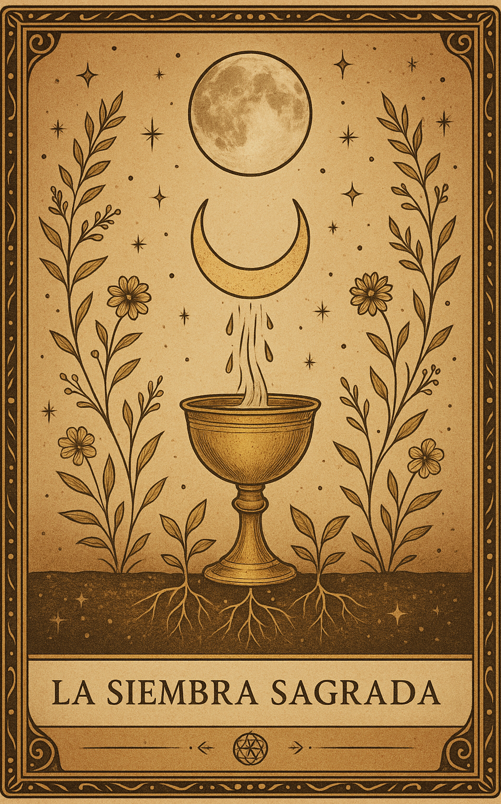
"Toda semilla plantada con el alma florece en su tiempo perfecto."
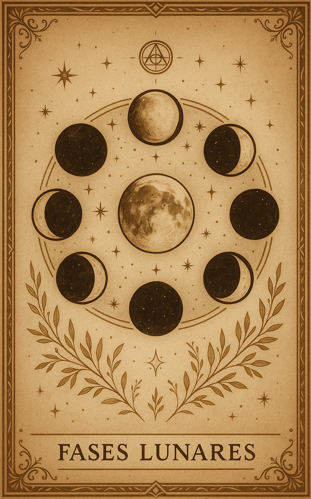
"Así como la luna, también yo tengo permiso de transformarme."
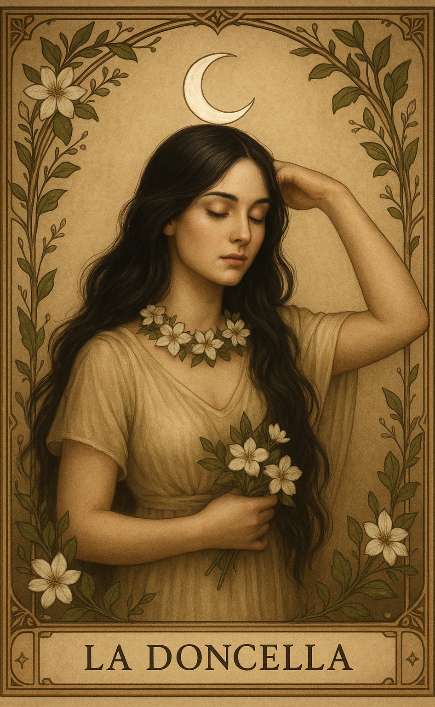
"La Doncella es la luna creciente del alma."
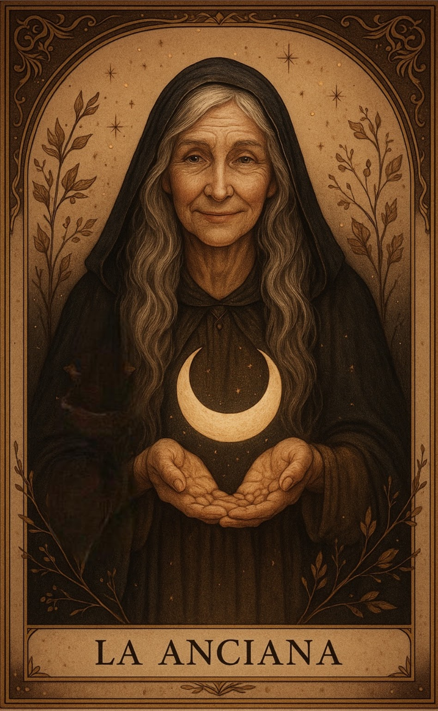
"La Anciana es la luna menguante que enseña a soltar."
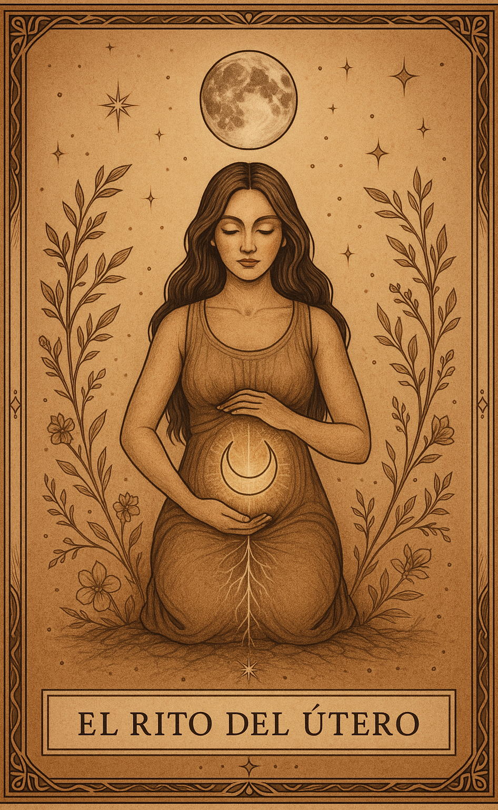
"La Madre es luna llena: presencia, protección y plenitud."
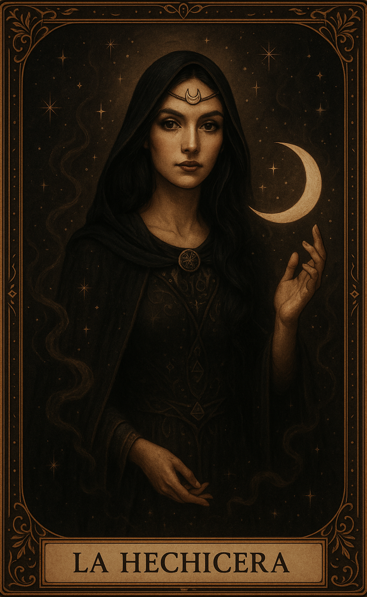
"Su energía vibra en la Luna Oscura: transformación, misterio y renacimiento."
Iniciación al Tiempo Sagrado
Este no es un libro, es un grimorio mágico
Es un umbral.
No se busca.
El te encuentra.
Porque cuando el alma está lista para recordar…
el conocimiento aparece.
El Grimorio Lunar es una iniciación al tiempo natural.
Un sendero reservado para quienes ya no desean vivir bajo el ritmo artificial del mundo,
sino bajo el pulso vivo de la Luna, la Tierra y el corazón cósmico.
Aquí no aprenderás información.
Aquí activarás memoria.
Durante 13 lunas recorrerás un ciclo completo de transformación:
Cada luna es una puerta.
Cada día, un código.
Cada ritual, una activación energética.
Contenido Operativo
Este diario no se lee en piloto automático.
Se practica con conciencia.
Se honra con presencia.
Se atraviesa con valentía.
¿Es para ti?
Este Grimorio es para la mujer que:
Si sientes una mezcla de emoción y respeto…
es porque reconoces que esto no es entretenimiento espiritual.
Es un pacto contigo misma.
El Umbral
"Renuncio al tiempo impuesto.
Recupero el tiempo del alma.
Activo mi ciclo galáctico.
Camino como mujer medicina."
Y cuando cruzas ese umbral…
ya no vuelves a mirar el tiempo igual.
ya sabes la respuesta.
Los Pilares del Grimorio
Fuego, Agua, Aire y Tierra.
Las fuerzas primordiales que sostienen toda magia ancestral.
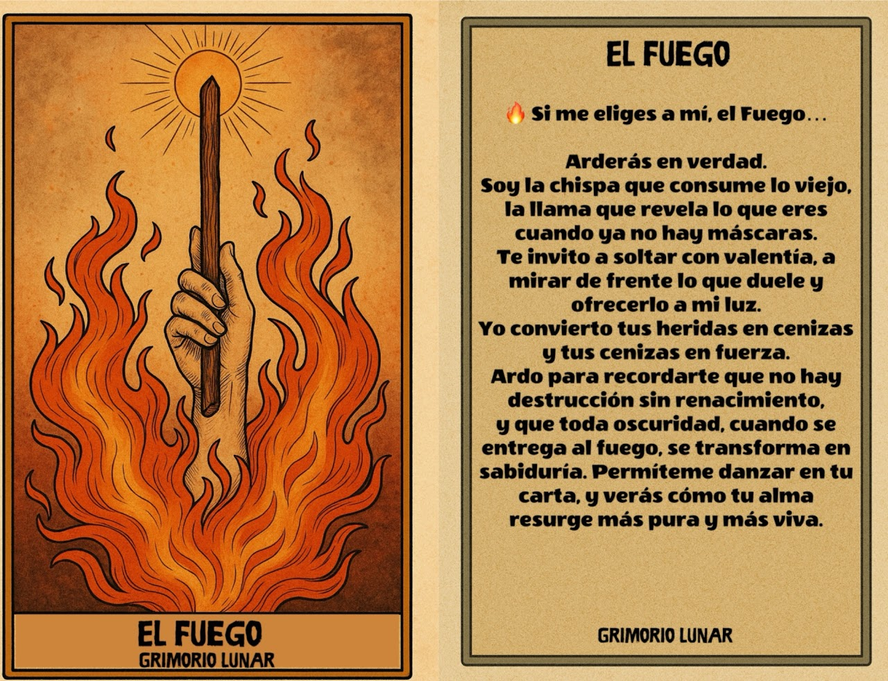
El Fuego es purificación y verdad. Transmuta heridas en fuerza y miedo en poder. Solo quien está lista para arder… puede convertirse en luz.
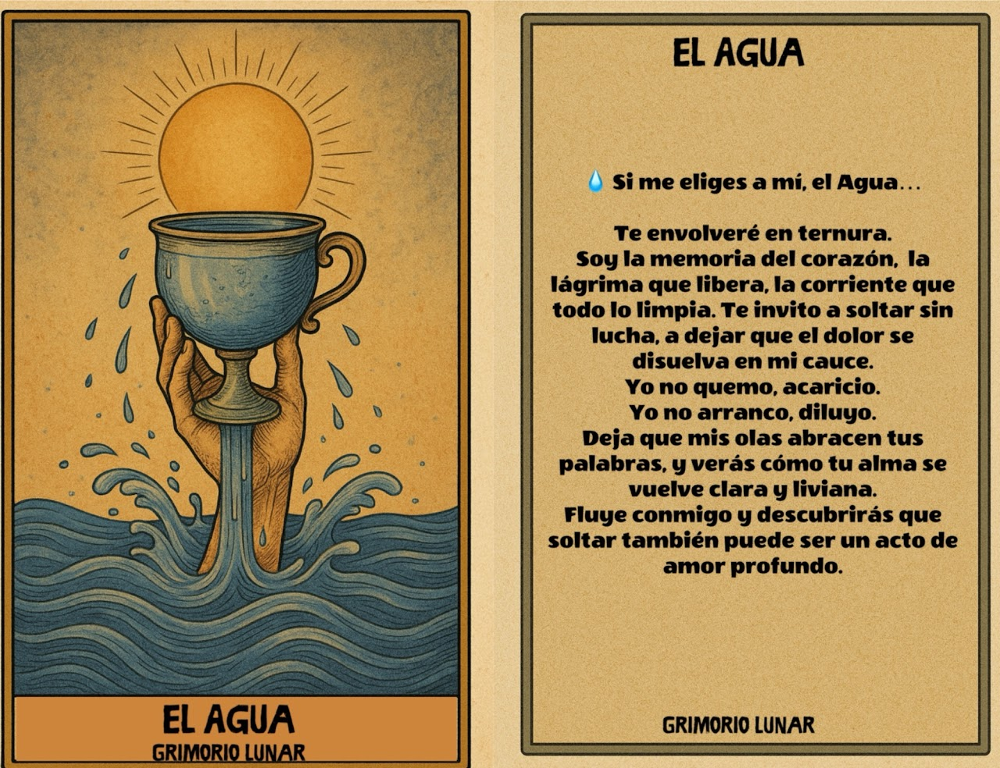
El Agua es memoria, emoción y purificación. Disuelve el dolor, suaviza el miedo y devuelve al alma su transparencia original.
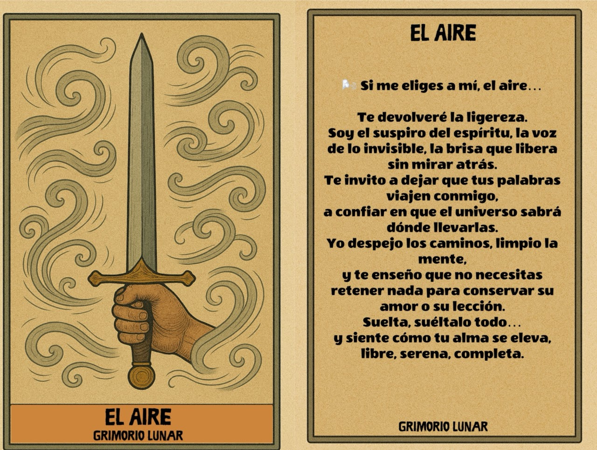
El Aire es palabra consciente y visión clara. Limpia la confusión, eleva el espíritu y te enseña que soltar también es libertad.
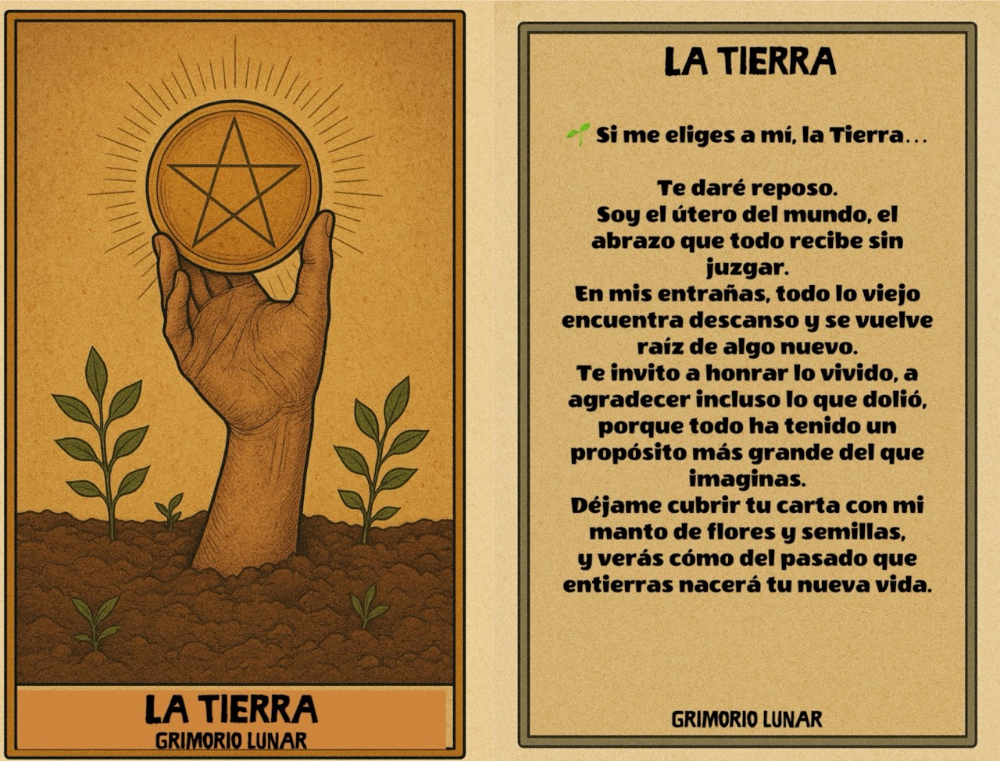
La Tierra es sostén y renacimiento. Recibe lo que fue, lo transforma en semilla y lo devuelve como vida nueva.
Tu decisión de hoy
Dentro de un año estarás en un punto distinto.
La única pregunta es:
¿vas a llegar ahí en automático… o transformada?
El Grimorio Lunar es un compromiso con tu evolución.
Cada luna que atravieses con conciencia
será una versión más auténtica de ti.
Seguir igual también es una elección.
Pero si algo dentro de ti sabe que este es tu momento…
no lo postergues.
Porque la persona que serás dentro de 13 lunas
depende de lo que decidas hoy.
El llamado es profundo.
Y lo profundo transforma.
Solo $14,99 USD · Acceso inmediato · PDF descargable